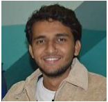
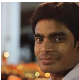
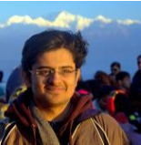
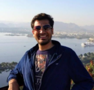
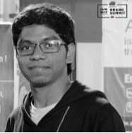
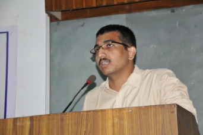
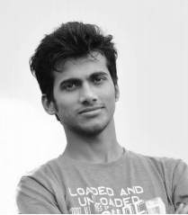

MESSAGE FROM ALUMNI
The past 5 years have been amazing for me. Thanks to the Department and the Institute for making this journey thrilling and joyful. General Championships, Exams, Illumination, Rangoli, Classes, Internship, Placement and many more things whose experiences I have shared with my best friends, I am going to miss them all. I will always have a bundle of good memories from KGP which I am going to cherish for my entire life. I would suggest juniors to explore themselves and explore the many opportunities the campus is filled with. Find your passion or build it and keep learning new stuffs. Make friends as they are the ones that will matter the most in your years in KGP. Enjoy and party the many special moments which you are going to have here. And always try to maintain a good academic record.
-Aman Kumar Jaiswal

It has been an overall awesome experience. From DAA to Topology, we have seen everything. Taking about suggestions for juniors,
I would list down do's & don't as follows: -
1. Please attend classes at least 70%. Especially if your CG is low.
2. CG matters above all. So, don't compromise your CG for anything.
3. At the same time, don't confine yourself only to acads. There is so much to explore, from poltu to general championship,
from shergil to tikka.
4. Once in a while smoking is OK. But, if smoking is overpowering you, then you need to give a serious thought about this.
My suggestion would be to avoid these things as much as you can.
There is no studapa in having G and suffering from headache for two-three days.
5. Use your vacation properly. Don't do anything just for CV. In a long run, your experiences matter, not the headlines.
So, Best of Luck Guys.
KGP KA TEMPO HIGH HAI.
- Abhishek Kumar
Firstly, enjoy your stay at kgp by you know hanging out at night ;), participating in extra-academic activities like Sports, Socult activities and remember, whatever you do, reach the maximum heights on it. Like be a part of inter IIT or interhall team. Do not have what you say "fear of failure", instead "dare to fail". If you don't get what you want, then you deserve more than that. Remember the line "Experience is what you get when you don’t get what you wanted." If you are looking for internships in your 2nd or 3rd year, first take all fundas from senior as they already have been where you are right now, in fact stay in contact with them as they know more about department. You can also make your personal website/portfolio and make LinkedIn profile. All the Best!
- Ayush Shukla
Well, the last 5 years my life, I call it my Honeymoon. The shortest yet the most memorable & enjoyable part of my life. KGP to me has been about Friends/Family, E-Cell, Department, Hall, Hult, Cooking, Travelling, Reading, Internships, Poltu. I recommend you to explore yourself. Don’t ever do things for your resume, instead do what pleases/interests you but take it slow, one step at a time. Exploring a new thing every semester or vacations will give you plethora of experiences for life. And also, a fresh perspective. Ask yourself ‘What would you do if you weren’t afraid?’ and then Just do it. The question which has always baffled people is ‘List out things that you’ve done in life out of curiosity!’. Make sure you get this one.
-Anush Gupta
Live these 5 years to your fullest because you are not going to get them again. The freedom, time and space you get here in kgp will never show themselves to you, at least not in the near future. Kgp is known for its exposure to extra academic activities, no wonder there are so many societies and hobby groups out there. The advantage with the department is that you have the funda of a CS(almost) guy and time way more than any others in the institute, USE it well. Also, keep in touch with your seniors because you never know where they might show up next. Last but not the least, if you have a healthy CGPA good, else do not panic as there is more to life than CGPA. CGPA is just another metric to say about what you are, don't let it be the only one. All the best for all your future endeavors and keep in touch!
-Anuj Menta
Yo ! People,
I entered this holy place (for me) with an admission into Dept. of Chemistry.But by the obvious brainwashing by
wingees in first year, I changed to Math & Computing, With a unhappy transition, I lost interest in coding(which I had developed in PDS).
I was spending time in Algo lab, where I dreamed of spending my time in a chemistry lab. So right from the 3rd semester,
I realized that coding is not a piece in my plate. But I really enjoyed each and every math course of the dept.
In fact I regret today that I should have pursued them with greater rigor. Slowly I developed a interest in stats,
took additional's and finally I am with a PhD offer now. So by my story I want to emphasize that "if you miss what you had really
wanted, try for the next interest - you may land up in something beautiful"
The other side of my life at KGP is my Hall.
Starting from Secretary mess, General Secretary Mess to Second Senate Member - the three years - 2014-17 made me a complete human
being and more importantly inculcated a feeling in me to serve the people. The feeling of attachment to hall and a spirit to
serve made me so crazy that I took up the responsibility of UG Rep in final year when all placements, PhD apps were at stake.
But I was just remembering one line said by my senior "Logon ka bhala karo, aur khud immandar raho, tumhara tho bhala hona hi hai".
And it all happened as said.My track may be so glorious to all the readers, but I have failed in one aspect. I haven't earned
friends over here. I have people with me to work together. But I have no one of them to hangout, to go on a trip etc.
Being in all posts over the last 4 years, you may not believe that I haven't visited flavours for any treat/party etc.
So I would like to advise youthat "Being workaholic is great, but please do have your personal space and have a group
of guys to hangout/ laugh/ drink/ cry etc." So coming to an end, 4 simple advises
1) Work for people and then for yourselves
2) Earn Friends and Make your time over here great
3) Do not indulge in weed and lastly
4) Make the
glory of KGP glow in your hearts but not on your fb timelines !
Yo ! KGP :)
-Ksheera Sagar
KGP is a world in itself. Well, we have our own lingo, our own special foods cooked nowhere else and unity amongst the diverse junta in the campus. With a huge campus,never ending opportunities and multiple hangout places, we have our own mini culture to live by. We have our own little ways of celebrating different occasions and festivals and finally never ending tempo for almost everything. It's a home away from home which will always be dear to us. The memories we collect during our stay in KGP are countless and it's almost impossible to capture them all except in our hearts. I made many friends that will last a lifetime, take on many journey that are truely life changing and leaving this place, a completely transformed person! My perspective towards life has changed and I am graduating from here with our bags full of memories and hearts full of love for KGP. I have millions of memories in KGP in many places spread around the campus, tata sports complex, jnan ghosh, tikka, cheddis, departments, gymkhana, 2.2, lakeside and many more. They will stay forever in my heart.To juniors: KGP has a lot of things to offer from the academic opportunities, competitions to the various societies, cultural, tech and sports events. Try to get most of it, don't confine yourself to your room. Get involved - organizing events, leading teams etc. Not just for CV, anything that you think will help you grow as a person, just go for it. All the best! KGP, it's a once in a lifetime voyage, a journey that I'll never forget. KGP ka tempo high hai!!
-Manish Kumar
NOTE:-
This is a humble request to everyone that if any of your friend's name is missing then please let us know.